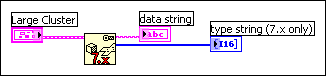
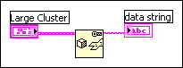

The 16-bit array format cannot represent some large data types. Remove the output array or change the input data type on the Flatten to String function.
To correct this error, remove the output array wired to the type string (7.x only) terminal and right-click the VI and remove the checkmark next to the Convert 7.x Data shortcut menu item. You also can change the input data type wired to the anything terminal to a smaller data type.
